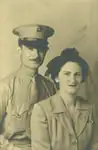
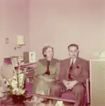

001 Day John and Esther
Pictures of John and Esther (Krehbiel) Day, Elmer's sister.
← Return to Krehbiels

kre001-00001
194x Esther and John Day portrait. John Day and Esther (Krehbiel) Day, c. 1940s.Updated: 4 Jul 2005

kre001-00002
1955 Esther and John Day sitting on couch. John Day and Esther (Krehbiel) Day, c. 1955.Updated: 4 Jul 2005
2 photos available in this directory.